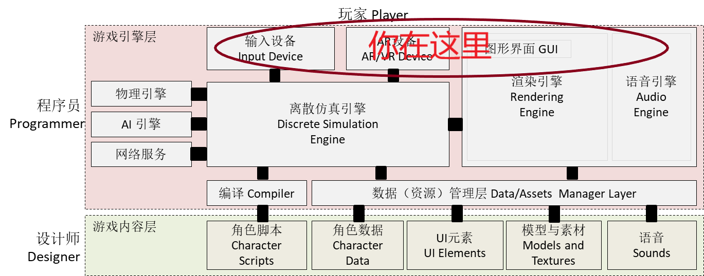
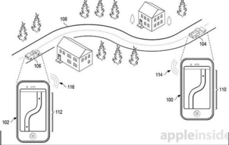
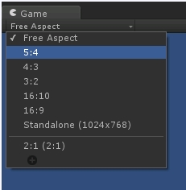
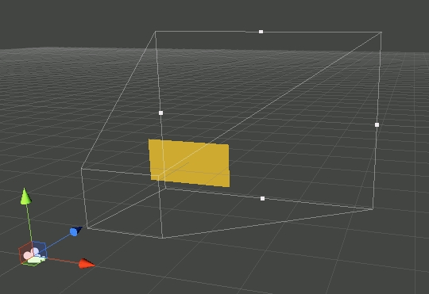
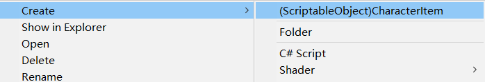
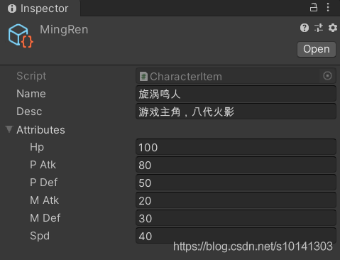
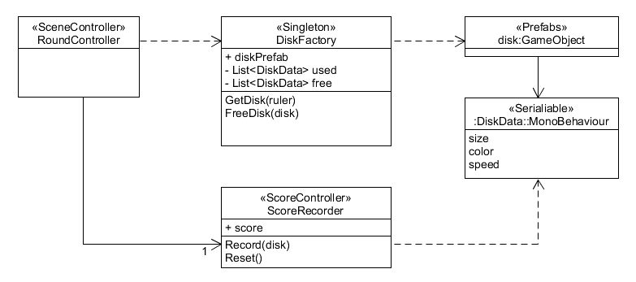

五、与游戏世界交互
Contents
It freed me to enter one of the most creative periods of my life
— Steve Jobs, Stanford Report, June 14, 2005
预计时间：3-4 * 45 min
课程内容

1、游戏交互与创新
游戏交互是玩家体验的基础。这里 交互模型 定义为建立输入设备的输入与游戏世界中的对象行为之间的关系，以及游戏世界状态与玩家感知（视觉、听觉、触觉、嗅觉等之间的关系）。在科幻电影中，玩家通过脑电波驾驶与控制装备；在现实的游戏中，通常使用操纵杆控制游戏中玩家扮演的角色。
1.1 游戏交互模式设计
Adams 认为交互设计是用户体验的核心内容，游戏输入装备的功能和性能会影响玩家在游戏中的行为选择。Adams 从游戏设计角度给出了交互设计的要点。游戏典型的交互模型包括：
- 角色扮演模型。即玩家扮演游戏世界中的一个对象，并实现游戏操纵杆及其按钮的操作与游戏对象行为之间的映射。这样，玩家就可以通过一个或多个设备控制游戏对象。
- 多视角交互模型。即为游戏世界构建多个视图，每个视图反映不同观察视角或游戏的状态，使得玩家可以在不同视图中选择合适的方式（如菜单、软件工具等）与游戏世界交互。
- 团队交互模型。在社交类游戏中，通常有视图反映协同玩家状态，如队友列表等，玩家可通过广播、视频、聊天室、私聊等即时沟通渠道实现协作。
- 竞技交互模式。具备竞技模式一般需要支持更多的游戏设备，以满足发烧玩家的需要。使用 180 度屏幕、7 声道杜比立体声、游戏鼠标等的玩家，显然都是游戏公司争夺的 VIP。
- 桌面、移动交互模式。以大众客户为目标，通常是小游戏或商业游戏。
Adams 对交互模型中常见的设计问题做了一些总结：
- 视角
- 3D 与 2D 的选择
- 第一人称与第三人称的感知差异
- 多摄像机与投影模型
- 视觉元素
- 主视野
- 反馈元素（如血条等表示游戏世界对象的状态）
- 小地图
- 化身肖像
- 菜单与按钮
- 音频元素
 如果你对游戏交互设计感兴趣，请阅读游戏设计教材，Adams《游戏设计基础》！
如果你对游戏交互设计感兴趣，请阅读游戏设计教材，Adams《游戏设计基础》！
1.2 游戏创新方法
游戏创新存在比较明显的鄙视链现象。用专业输入装备玩游戏的鄙视用手机玩游戏、Unreal开发者鄙视Unity开发者，这些容易理解，创新也分等级就难以理解了。 Quake engine的作者约翰·卡马克，为什么要加入 Oculus Rift 团队，并出任首席技术专家？
1、游戏创新第一层：交互装备创新
说到游戏交互装备创新，最厉害的参与者是 Apple、Microsoft、Nintendo、Sony，它们都是实力雄厚的大厂。在 AR/VR 与 物联网 时代 HTC、Oculus 以及其他厂商也积极融入其中。也许有一天，小米的各种 IoT 外设成为现代游戏元素的一部分。（IoT 游戏？2019年的预言，未来会不会流行呢？）
以 Nintendo 的《口袋妖怪/精灵宝可梦》系列为例，第一代游戏掌机就配备的游戏；2006 年，任天堂发布了新一代游戏主机Wii，Wii配套的新款游戏手柄第一次将体感动作引入了游戏，体感装备出现后，用户们第一次发现原来除了传统的手柄按键控制之外，自己还可以直接用身体动作来控制屏幕上的游戏人物，《精灵宝可梦》出现了许多新玩法；2016年，《精灵宝可梦GO》更是现象级游戏，将现实地图与GPS位置引入游戏，预示 AR 游戏时代的到来。
Microsoft，首创带力反馈游戏手柄；人体识别体感装置 Kinect ；全息眼镜 HoloLens。这些装备改变了人机交互方式，游戏更好用于医疗、复杂环境的仿真与教学。
Apple 就不用说了。手机游戏几乎伴随智能手机成长。手机中许多传感器几乎就是为游戏而生。多点触摸、3d Touch，以及今天 Apple “奇丑无比” 的双肩屏（AR kit 需要这个传感器），哪个不瞄准游戏交互的制高点。
因此，运用现代交互与呈现技术是游戏创新的首选（仅对学生而言）。
2、游戏创新第二层：机制创新
通常游戏竞赛都是聚焦这个层面，具体包括：
- 新设备在新领域（医疗、公益、电商、社交）的应用
- 游戏与智能技术（语音交互、智能学习、各种识别… …）
- 新颖玩法（Flappy Bird、Temple Run … …）
- 题材创新（如挑战极限系列，史上最难….）
3、游戏创新第三层：以客户为中心的创新
对于商业公司挣钱才是第一要素。因此，他们更希望是较小的风险和较高的收益，或者是砸钱易出效果类型。例如：“吃鸡”类游戏很流行，大家都忙推这类游戏。同类游戏，大家 PK 什么呢？
- 细腻逼真的 3D 素材（比技术门槛和经费，如暴雪产品）
- 热门故事（通常与历史、热门电影、政治事件绑定）
- 满足各种脑残粉（如：开心消消乐、国内所有页游）
4、创新选择
体验、体验、新体验！！！
- 游戏题材：
- 体育、教育、赛车、社交等题材最敏感
- 交互创新：
- 触摸交互，重力交互，语音交互，体感交互
- AR/VR
- 沉浸式体验技术，最热
游戏基本形式：
- 经济性驱动的游戏
- 选择手机及其智能设备创新游戏
- 挑战性驱动的游戏
- 必须包含，键盘
- 行为模式驱动的游戏
- 碎片时间游戏
1.3 常见游戏输入设备
1、经典“三宝”
- 键盘（KeyBoard）
- 鼠标（Mouse）
- 游戏操纵杆（Joystick）
2、手机游戏输入设备

- 触摸屏（TouchPad）
- 重力/位置传感器（Gravity/Geo Sensor）
- 麦克风（Audio）
- 摄像头（AR）
- 物体识别与跟踪（Tracking）
- 3D 建模（SLAM）
- 手势/体态（Gesture/Posture）
- 蓝牙, NFC … … 包括可连接手机的各种智能设备
3、IoT 与 其他设备
- VR头盔
- Hololen
- 体感、Kinect
- 条码、激光等各种传感器 … …
2、Unity 输入处理
Unity 支持对游戏使用最常规的输入设备类型（如控制器、游戏手柄、键盘和鼠标），还支持移动设备的触摸屏和移动感应功能。此外，还支持 VR 和 AR 系统的输入（VR 和 AR 见后面的章节 ）。
Unity 还可以使用计算机的麦克风和网络摄像头来输入音频和视频数据。配合第三方云 API ，如图像识别、语音识别等，用户可创新新的游戏玩法。
2.1 输入信息处理基本模型
1、输入处理模式
你可能打算自己处理设备的输入，但是在游戏循环驱动下，处理处理并不简单。主要方式有两种：
- 状态查询（polling states）
- 例如，每个周期检查键盘 A 的 up 或 down 状态
- 优点：简单，易于计算状态持续时间
- 缺点：每个循环都能检测到状态，简单根据 down 状态发起攻击，每秒要攻击无数次
- 推送事件（push events）
- 例如，某个周期检查到状态为 up，且上个周期为 down，则产生一个按键事件
- 优点：易于捕获事件，使用广泛
- 缺点：确认事件需要消除抖动，需要队列保存事件
2、输入组合与键盘映射
- 按键与组合
- 普通玩家在游戏中控制的按键不超过 6 个，跟多的动作需要通过按键组合使用。
- 专业玩家需要定义大量的按键，以更快捷的操作
- 键盘映射
- 满足不同玩家生理、习惯等因素形成的操作习惯
2.2 JoyStick – 虚拟轴与按键
对于传统输入，Unity 使用 Input 对象，完美支持键盘、游戏游戏操纵杆 和 鼠标。
Unity 引入 虚拟轴 的概念，统一管理键盘、游戏游戏操纵杆和鼠标的操作。
从脚本中，可以通过名称访问所有虚拟轴。
每个项目在创建时都具有以下默认输入轴：
- Horizontal 和 Vertical 映射到 w、a、s、d 键和箭头键。
- Fire1、Fire2 和 Fire3 分别映射到 Control 键、Option (Alt) 键和 Command 键。
- Mouse X 和 Mouse Y 映射到鼠标移动的增量。
- Window Shake X 和 Window Shake Y 映射到窗口的移动。
请选择 Edit > Project Settings 菜单，然后选择 Input 类别。还可以在此处更改每个轴的设置。

具体设置参见：传统游戏输入
- 在脚本中使用虚拟轴和按键
Input.GetAxis("Vertical") * speed;If (Input.GetButton(“Fire1”)) { }
编程 05-01，使用虚拟轴
- 使用unity虚拟轴默认配置
- 在（0，0，0）位置一个 cube，在其上挂代码
- 运行
- 修改
Horizontal的配置参数 - 观察效果
|
|
2.3 键盘
- Input 静态变量（只读）
- anyKey 判断是否有键按着
- anyKeyDown 判断是否有键按下
- inputString 输入缓冲区
- Input 静态方法
- bool GetKey(string name) 检测指定的按键按着
- bool GetKeyDown(string name) 指定的键按下
- 枚举
键的名称遵循以下约定：
- 普通键：“a”、“b”、“c”…
- 数字键：“1”、“2”、“3”…
- 箭头键：“up”、“down”、“left”和“right”
- 键盘键：“[1]”、“[2]”、“[3]”、“[+]”和“[equals]”
- 修饰键：“right shift”、“left shift”、“right ctrl”、“left ctrl”、“right alt”、“left alt”、“right cmd”、“left cmd”
- 鼠标按钮：“mouse 0”、“mouse 1”、“mouse 2”…
- 游戏杆按钮（任何游戏杆）：“joystick button 0”、“joystick button 1”、“joystick button 2”…
- 游戏杆按钮（特定游戏杆）：“joystick 1 button 0”、“joystick 1 button 1”、“joystick 2 button 0”…
- 特殊键：“backspace”、“tab”、“return”、“escape”、“space”、“delete”、“enter”、“insert”、“home”、“end”、“page up”和“page down”
- 功能键：“f1”、“f2”、“f3”…
- 用于标识键的名称在脚本接口中和在 Ins
离散系统状态与事件
- 假设离散系统每秒采集 60 次状态
- 玩家按了 “z” 键
- 在 Update 中 Input.GetKey(“z”) 就会检出几十次
- 在 Update 中 Input.GetKeyDown(“z”) 只会出现一次，但如果你这帧没有检查，则所有状态自动复位
- 对于事件，例如：KeyDown
- 可能同时发生多个
- 所以必须使用缓冲区缓存多个事件，如 inputString
编程要点
Input.GetKey 检测用户按键“力度”，请使用虚拟轴 Input.GetKeyDown 检测用户按键次数
字串的输入
返回该帧输入的键盘输入。（只读）
|
|
2.4 鼠标
- Input 静态变量（只读）
- mousePosition 鼠标位置（Vector3）
- mousePresent 是否有鼠标
- Input 静态方法
- bool GetKey(string name) 检测指定的按键按着
- bool GetKeyDown(string name) 指定的键按下
- 枚举 KeyCode.Mouse0 .. KeyCode.Mouse6
编程要点
其实程序 onMouseMove，onMouseMoveOver 也难写
每帧检测 MouseMove 可能导致计算过载，FPS！！
编程 05-02，DoubleClicked 检测
以下伪代码对吗？
|
|
2.5 手机输入与其他
iOS 和 Android 设备能够跟踪多根手指同时触摸屏幕的操作。 您可以通过访问 Input.touches 属性数组来访问最后一帧期间每根手指触摸屏幕的状态数据。
设备移动时，其加速度计硬件将报告设备沿三维空间中的三个主轴的线性加速度变化。 您可以使用该数据检测设备的当前方向（相对于地面）以及该方向上的任何即时更改。
其他值得研究的输入
- 手势输入（Gesture/Posture）
- 到商店搜索一下… …
- 语音输入
- 也可以在网上搜索（unity 语音）
- 图像输入与AR
- GPS 位置输入
- MR 越野游戏：定向追踪（定向寻宝）
3、人机交互
3.1 Screen Space – 屏幕坐标系统
- 屏幕坐标（ Screen Space ）
- 像素为单位，屏幕的左下角为（0，0）点，右上角为（Screen.width，Screen.height）
- 视口坐标（ViewPort）
- 视口坐标是标准的和相对于相机的。相机的左下角为（0，0）点，右上角为（1，1）点
- Aspect（观察面）
- 适应不同播放制式的观察面

透视图

从camera角度：
- 物体透视按摄像机 z 轴深度投影到一个观察面。这个面是 z = z0 的一个正方型 (-1,-1)~(1,1) ，称为标准面。正交投影就按 size 标准化；
- 用 aspect 将正方形裁剪成一个矩形，这个矩形就是视口；
- 将矩形映射的像素空间，就是 Screen Space
3.2 鼠标与 3d 空间物体交互
- 射线碰撞与屏幕坐标
- 屏幕每个点 p 都对应标准面上一个点 p’
- 摄像机坐标系中 op’ 向量上点都投影到 p （透视图）
- 因此，op’ 向量（射线）碰撞到的第一个三角面所属对象就是该坐标显示的物体
- Unity 的支持
- Ray 射线结构，表示从某个点（original）发出的射线
- RaycastHit 射线与物体碰撞的数据结构
- Physics 物理世界管理对象，包括重力常数设置；射线、线段、盒子、球体碰撞的常用静态函数
- Camera 部件，根据透视形式，返回正确的射线结构
编程 05-03，光标拾取物体
|
|
程序要点：
- mousePosition 是 Vector3 ，请不要修改 z 坐标
- 获取摄像机的 Camera 部件，构建 Ray
- Camera 部件支持正确生成世界坐标的射线
- Raycast 函数使用了变参（值参与变参），为什么 hit 必须用变参？
- 为了优化性能，Raycast 支持在特定层扫描对象
要点，射线碰撞
射线碰撞 Physics.Raycast
编程 05-04，光标拾取多个物体程序
- 将以下部件加载到场景中
- 点击对象，消除除了地形以外的物体
|
|
注意程序的性能问题哦！
4、面向对象的编程 - 设计模式：游戏对象的生产与回收
创建型模式的主要关注点是“怎样创建对象？”，它的主要特点是“将对象的创建与使用分离”。这样可以降低系统的耦合度，使用者不需要关注对象的创建细节，对象的创建由相关的工厂来完成。
创建型模式分为以下几种。
- 单例（Singleton）模式：某个类只能生成一个实例，该类提供了一个全局访问点供外部获取该实例，其拓展是有限多例模式。
- 原型（Prototype）模式：将一个对象作为原型，通过对其进行复制而克隆出多个和原型类似的新实例。
- 工厂方法（FactoryMethod）模式：定义一个用于创建产品的接口，由子类决定生产什么产品。
- 抽象工厂（AbstractFactory）模式：提供一个创建产品族的接口，其每个子类可以生产一系列相关的产品。
- 建造者（Builder）模式：将一个复杂对象分解成多个相对简单的部分，然后根据不同需要分别创建它们，最后构建成该复杂对象。
对象池
创建与销毁需要耗费大量资源，因此对象销毁时，我们仅做一个标记，等需要时再重新初始化并投入使用，该技术称为对象池。
4.1 单实例
1、单实例
见前面的内容
2、场景单实例
运用模板，可以为每个 MonoBehaviour子类 创建一个对象的实例。Singleten<T> 代码如图所示：
|
|
场景单实例的使用很简单，你仅需要将 MonoBehaviour 子类对象挂载任何一个游戏对象上即可。
然后在任意位置使用代码 Singleton<YourMonoType>.Instance 获得该对象。
4.2 原型模式
Unity 对原型模式创建对象的支持是强大的，正常情况下不需要使用对象的 Clone 方法。
1、预制件 + 实例化
游戏系统主力的创建游戏对象方法，也是最实用的技术。
Object.Instantiate 是克隆万物之神器
- 实例化 GameObject 将克隆所有子对象和组件
- 实例化 Component 也会附加到游戏对象
- 实例化 游戏对象和部件，可以附加指定其位置、角度、坐标系等
配合预制件，非常方便。 例如：筑墙
|
|
代码不仅很整洁，而且可复用性很强。没有任何信息表示我们要实例化立方体或者它必须包含刚体。所有这些都在预制件中定义。
具体操作与更多案例，参见官方参考：运行时实例化预制件
2、资源加载
通过 Resources.Load 函数，可访问 Assets 文件夹中处于任意位置的名为“Resources”的文件夹中的所有资源。 可以存在多个“Resources”文件夹，加载对象时，将对每个文件夹进行检查。
|
|
思考
资源加载 与 预制实例化的区别是？
更多细节，特别是资源的空间利用与回收，请参考Resource
3、使用ScriptableObject文件定制属性配置
|
|
鼠标右击创建asset配置文件，就看到 Create 菜单多了创建数据项

然后在 Inspector 中编辑配置数据。

在脚本中使用配置数据，例如：
|
|
然后，从 Asset 中将配置好的数据拖入。
4.3 对象创建与销毁
游戏对象创建
例如，在一个飞碟游戏中，每一轮都有很多种飞碟，它们都是按特定配置随机产生，如果使用以下方法创建这些飞碟
- 创建空对象并添加组件
- new GameObject();
- new GameObject(string name);
- new GameObject(string name, params Type[] components);
- 创建基础类型游戏对象
- GameObject CreatePrimitive(PrimitiveType type);
- 从已知对象或预制克隆
- Instantiate
(brick, new Vector3(x, y, 0), Quaternion.identity);
- Instantiate
必然在多处代码中出现复杂的创建飞碟。因此需要一个类来整合这些可以共享的代码，即工厂类！
游戏对象销毁
- 对象销毁
- Object.Destroy(Object obj, float t = 0.0F);
- 如果是组件对象，则从游戏对象中立即摘除；
- 如果是游戏对象，则不会在update期间立即销毁，通常在 render 前销毁它的部件以及所有子对象；
- 立即销毁
- Object. DestroyImmediate
- Unity 建议不要立即销毁，这可能导致离散引擎并发的行为之间依赖关系产生不可预知错误；
4.4 案例研究 - 简单工厂与对象池
案例研究：“鼠标打飞碟”游戏设计
游戏需求：
- 分多个 round ， 每个 round 都是 n 个 trail；
- 每个 trail 的飞碟的色彩，大小；发射位置，速度，角度，每次发射飞碟数量不一；。
- 鼠标击中得分，得分按色彩、大小、速度不同计算，计分规则自由定
为什么需要工厂对象
简单工厂又称为工厂方法，即类一个方法能够得到一个对象实例，使用者不需要知道该实例如何构建、初始化等细节。
- 游戏对象的创建与销毁高成本，必须减少销毁次数。如：游戏中子弹
- 屏蔽创建与销毁的业务逻辑，使程序易于扩展
在 Unity 中，工厂方法 + 单实例 + 对象池 通常都是同时一起使用。直接给设计：

设计师读图：
- 游戏由导演、场记、运动管理师、演员构成。
- 新游戏中，场记请了记分员、飞碟管理员
- 飞碟管理员管理飞碟的发放与回收，自己有个小仓库管理这些飞碟
- 记分员按飞碟的数据计分，记分员拥有计分规则
- 场记只需要管理出飞碟规则与管理碰撞就可以了
设计模式解读：
- DiskFactory 类是一个单实例类，用前面场景单实例创建
- DiskFactory 类有工厂方法 GetDisk 产生飞碟，有回收方法 Free（Disk）
- DiskFactory 使用模板模式根据预制和规则制作飞碟
- 对象模板包括飞碟对象与飞碟数据
这样设计的优势
应对规则、地图等变化，让设计者最低代价管理规则变化。例如：
- 道具工厂
- 通过场景单实例，构建了方便可取获取DISK的类；
- 包装了复杂的Disk生产与回收逻辑，易于使用；
- 它包含Disk产生规则（控制每个round的难度），可以积极应对未来游戏规则的变化，减少维护成本
- 记分员
- 包装了计分规则（控制业务均衡）
- 提供了简单的对外业务接口
对象池的实现
这里仅给出伪代码
|
|
5、小结
- 游戏输入
- 游戏输入与应用创新的关系
- 查询模型与事件模型
- 虚拟轴与虚拟按键（虚拟的优点）
- 键盘查询
- 用鼠标拾取3D对象
- 设计模式：游戏对象的生产与回收
- 场景单实例模式
- 模板模式
- 工厂模式
- 对象池
6、作业与练习
1、编写一个简单的鼠标打飞碟（Hit UFO）游戏
- 游戏内容要求：
- 游戏有 n 个 round，每个 round 都包括10 次 trial；
- 每个 trial 的飞碟的色彩、大小、发射位置、速度、角度、同时出现的个数都可能不同。它们由该 round 的 ruler 控制；
- 每个 trial 的飞碟有随机性，总体难度随 round 上升；
- 鼠标点中得分，得分规则按色彩、大小、速度不同计算，规则可自由设定。
- 游戏的要求：
- 使用带缓存的工厂模式管理不同飞碟的生产与回收，该工厂必须是场景单实例的！具体实现见参考资源 Singleton 模板类
- 近可能使用前面 MVC 结构实现人机交互与游戏模型分离
如果你的使用工厂有疑问，参考：弹药和敌人：减少，重用和再利用；参考：Unity对象池（Object Pooling）理解与简单应用 代码质量较低，比较凌乱
2、编写一个简单的自定义 Component （选做）
- 用自定义组件定义几种飞碟，做成预制
- 参考官方脚本手册 https://docs.unity3d.com/ScriptReference/Editor.html
- 实现自定义组件，编辑并赋予飞碟一些属性
如果你想了解跟多自定义插件或编辑器的话题，请参考：Unity3d自定义一个编辑器组件/插件的简易教程
Author 潘茂林
LastMod 2020-08-30